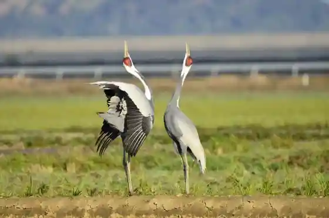
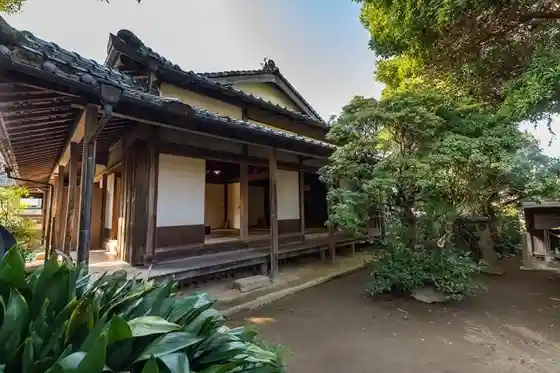
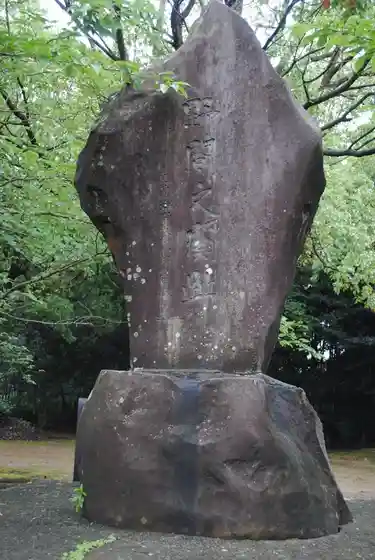
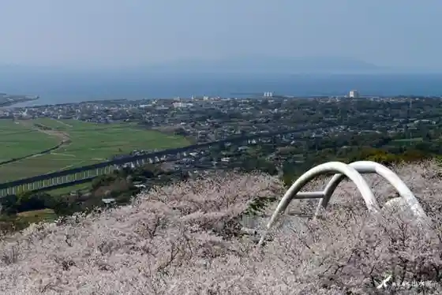

Izumishi Tsuru Kansatsu Center
Izumishi, Kagoshima · 0996-85-5151 · Official / source link

Izumishi Tsuru Museum Kurein Park Izumi
Izumishi, Kagoshima · 0996-63-8915 · Official / source link
Izumishi Fumoto Buke Yashiki Gun
Izumishi, Kagoshima · 0996-63-2111 · Official / source link

Noma Yuki Kan Ato
Izumishi, Kagoshima · 0996-63-2111 · Official / source link

Toko Yama Park
Izumishi, Kagoshima · 0996-63-2111 · Official / source link

Jojo Highlands (Kosumosu Sono)
Izumishi, Kagoshima · 0996-63-2111 · Official / source link
Hakozaki Hachiman Shrine (Nippon'ichi no Dai Suzu)
Izumishi, Kagoshima · 0996-62-2219 · Official / source link
Ka Murasaki Kuri Shrine
Izumishi, Kagoshima · 0996-67-2800 · Official / source link
Kanno Zendera (Chinkoku Yama Kanno Tera)
Izumishi, Kagoshima · 0996-84-2075 · Official / source link
Taka no Yama Park Campground (Koyasan Park)
Izumishi, Kagoshima · 0996-82-0543 · Official / source link
Kako Shima Ken no Tsuru Oyobiso no Torai Chi
Izumishi, Kagoshima · 0996-63-2111 · Official / source link
Izumi Kanko Gissha
Izumishi, Kagoshima · 0996-79-3030 · Official / source link
Takagawa Damu Shuhen Park
Izumishi, Kagoshima · 0996-63-2111 · Official / source link
Tokko Hi Park
Izumishi, Kagoshima · 0996-63-2111 · Official / source link
Shinonome no Sato Ajisai Sono
Izumishi, Kagoshima · 0996-68-2133 · Official / source link
Suwa Shrine
Izumishi, Kagoshima · 0996-63-3340 · Official / source link
Izumishi Fumoto Rekishikan
Izumishi, Kagoshima · 0996-68-1390 · Official / source link
Izumishi Fumoto Buke Yashiki Gun Kokai Buke Residence (Saisho Tei)
Izumishi, Kagoshima · 0996-63-6142 · Official / source link
Tsuru to Shonichi no Shutsu Nensho Me no Engimono
Izumishi, Kagoshima · 0996-85-5151 · Official / source link
Yasaka Shrine (Nippon'ichi no O Jizo Sama)
Izumishi, Kagoshima · 0996-63-2111 · Official / source link
Tennen Onsen Nukumori Baths
Izumishi, Kagoshima · 0996-79-3726 · Official / source link
Izumishi Shuzo
Izumishi, Kagoshima · 0996-79-3671 · Official / source link
Izumishi no Tsuru Kanko (Reiwa 7 Nendo Tsuru Etto Chiri Yo Chosei Nitsuite)
Izumishi, Kagoshima · 0996-63-8915 · Official / source link
Hirai Sato Rentasaikuru (HIRARIN)
Izumishi, Kagoshima · 0996-79-3030 · Official / source link
Izumishi Izumishi Eki Kanko Tokusanhin Kan (Hirai Sato)
Izumishi, Kagoshima · 0996-62-2354 · Official / source link
Reiwa 8 Nen Gantan Tokubetsu Ibento (Buke Residence no Irori Deo Mochi no Omotenashi)
Izumishi, Kagoshima · 0996-63-6142 · Official / source link
Orenji Orure 2026
Izumishi, Kagoshima · 0996-63-4777 · Official / source link
Sekai Shitchi no Nichi Shinpojiumu Izumishi Badofesuta
Izumishi, Kagoshima · 0996-63-8915 · Official / source link
Dai 3 Kai Fumotoasobi Marushie
Izumishi, Kagoshima · 0996-68-1390 · Official / source link
O Bon Yusuzu Mi Kai
Izumishi, Kagoshima · 0996-62-5505 · Official / source link